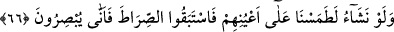
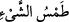

mü’min kula şöyle hitap eder: “Ne getirdin?” O kul yapmış olduğu ibâdet ve hayırları
saymaktan utanır. Hak Teâlâ, her biri amellerini söylesin diye onun âzâlarını konuşturur.
Parmaklar tesbîhatlarına şehâdet eder.” Nitekim Hz. Peygamber (s.a.) bazı hanımlarına
şöyle buyurmuştur: “Tesbih, tehlîl ve takdîse devam edin. Bunların sayılarını parmak
boğumları ile tesbit edin. Çünkü onlar da sorguya çekilecek ve konuşmaları
istenecektir.”[168] Yani kıyamet günü şâhidlikte bulunmaları istenecektir. Bu sebeple
zikirleri parmak boğumlarıyla saymak sünnet kılınmıştır. Kişi bilinen şekliyle parmak
boğumlarıyla saymayı bilemezse, parmaklarıyla istediği gibi yaptığı zikirleri sayabilir.
Nitekim el-Esrâru’l-Muhammediyye’de böyle geçmektedir.
Âriflerden birisi der ki: “Ağızların mühürlenip ellerin konuşmasının ve ayakların
şâhidlik etmesinin mânâsı, o kimselerin sûretlerinin değiştirilmesi, dillerinin
konuşmaktan alıkonması, ellerinin ve ayaklarının durumlarıyla ve şekilleriyle yaptıkları
amellere delâlet eden bir sûrete sokulması, bu organların yaptıkları fiillerin
şekillerinden/görünüşünden kendi melekeleri üzere hâl dilleriyle konuşmasıdır.”
Mücrimlerin/suçluların uzuvlarının görünüşü onların çirkin hallerine ve kötü işlerine
delâlet ettiği gibi mü’minlerin organlarının şekilleri de onların güzel hâllerine ve
işlerinin güzelliğine delâlet eder. Her kap içinde ne varsa dışına onu sızdırır.
Saîdlere/hoşbaht kimselere, onların şekillerinde, görünüşlerinde, tâatlerinde ve
ibâdetlerinde onlara uyanlara ne mutlu!
Şeyh Sa’dî der ki:
İnsan iyi adamların peşinde koşmalıdır.
Bu saadeti kim dilediyse bulmuştur
Ama sen, alçak şeytanın kuyruğundasın;
Bilmiyorum iyilere ne zaman yetişeceksin?
Peygamber, şefâat edecektir, ancak
Şerîatin ana yolunda yürüyenlere
66. Dilesek onların gözlerini büsbütün kör ederdik. O zaman doğru yolu bulmaya
koşuşurlardı, ama nasıl göreceklerdi?
Mekke müşriklerini dünyada cezâlandırmayı “Dilesek onların gözlerini büsbütün
kör ederdik.”
“ bir şeyin iz ve eserini tamamen silmek, yok etmekdir. “ onu sildim,
yok ettim ve kökünü kestim demektir. Nitekim el-Kâmûs’ta böyle geçer. Yâni dilesek
göz çukuru ve göz kapağı görünmeyecek şekilde gözlerinin ışığını ve sûretini gidermek
sûretiyle düz yapar ve yok ederdik. Gözleri diğer uzuvları gibi dümdüz hale gelirdi.